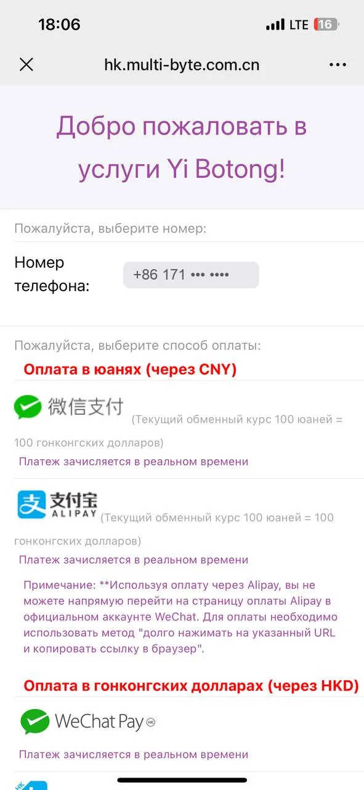
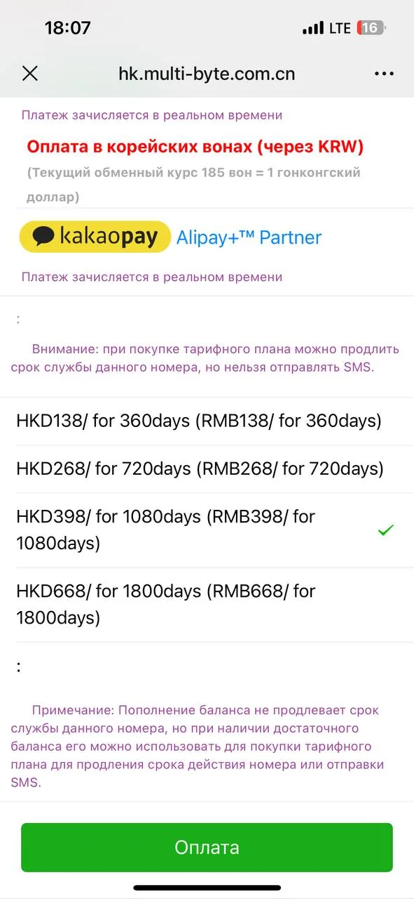

Li Auto: как продлить китайский номер eSender
У клиента закончился срок виртуального китайского номера, к которому привязан мастер-аккаунт Li Auto. Ниже – что это за номер, чем платить из России и восемь шагов оплаты с картинками.
Коротко
- Что случилось
- Закончился срок обслуживания виртуального номера +86 171… в сервисе eSender (на телефоне клиента WeChat перевёл название как «Yi Botong»). Это не SIM в машине и не «баланс». На этот номер приходят СМС-коды для входа в приложение Li Auto.
- Что делать
- Купить пакет продления внутри WeChat на телефоне клиента. Просто пополнить баланс бесполезно: срок продлевает только пакет.
- Сколько стоит
- 138 юаней за год, 398 за три года, 668 за пять лет. В рублях – примерно 1 700, 4 900 и 8 300 ₽ по курсу ЦБ.
- Чем платить
- Alipay с юанями на балансе. Российские карты напрямую не проходят.
- Сколько времени
- 10–15 минут, если юани на Alipay уже лежат. От часа до пары дней, если Alipay надо заводить и пополнять.
- Срочность
- Платить сегодня. После окончания срока номер хранится недолго, потом его аннулируют.
Почему нельзя тянуть
Просроченный номер eSender хранит ограниченное время, потом аннулирует и может выдать другому человеку. Сколько именно дней – источники расходятся: называют 3, 7, 15 и 30 дней. На официальном сайте срок не указан, сказано только «продлевайте до окончания срока».
Если номер уйдёт, коды входа в приложение Li Auto приходить перестанут, а мастер-аккаунт придётся восстанавливать. Это отдельная долгая и дорогая работа.
Хороший признак на скрине клиента: номер ещё выбирается в списке и тарифы показываются. Скорее всего, его не аннулировали и продление пройдёт. Это наше предположение по экрану, а не подтверждение от сервиса.
Что приготовить
- Телефон клиента с WeChat, в котором подключён eSender. Страница оплаты открывается только внутри WeChat. Мы открыли её адрес в обычном браузере 12.11.2026 – там заглушка «подпишитесь на аккаунт в WeChat».
- Alipay с юанями на сумму пакета. Где взять юани – в разделе «Где взять юани».
- Решение клиента, на сколько лет продлевать. От этого зависит сумма.
Тарифы
Цены со скрина клиента от 12.11.2026. Сервис считает в гонконгских долларах, но юани принимает один к одному: 100 юаней = 100 HKD.
| Срок | Цена, юани | В год, юани | В рублях по ЦБ |
|---|---|---|---|
| 360 дней (1 год) | 138 | 138 | 1 710 ₽ |
| 720 дней (2 года) | 268 | 134 | 3 321 ₽ |
| 1 080 дней (3 года) | 398 | 133 | 4 932 ₽ |
| 1 800 дней (5 лет) | 668 | 134 | 8 277 ₽ |
Скидки за долгий срок почти нет, год стоит 133–138 юаней при любом пакете. Брать на столько, сколько клиент планирует ездить на машине. На скрине клиента уже отмечен пакет на три года.
Восемь шагов
Названия кнопок даны так, как они выглядят в WeChat на английском, и рядом – как их перевёл телефон клиента. Розовая рамка показывает, куда нажимать.
1Открыть eSender в WeChat
На телефоне клиента открыть WeChat. В списке чатов найти раздел служебных аккаунтов (у владельцев он называется «Сообщения учётной записи» или «Учётные записи служб») либо набрать в поиске esender.
Нужен аккаунт с фиолетовым значком и словом eSender в названии. Перед словом стоят три иероглифа – это китайское название сервиса.
Открыть его чат. В чате лежат сообщения сервиса и СМС, которые приходили на номер.
2My A/C → Package Plan
Внизу чата три кнопки меню: Com Info, eSender, My A/C. Нажать правую – My A/C.
Всплывёт список: Account Info, Top-up, Recharge Voucher, Package Plan (Renew service), Voice Mail. Выбрать Package Plan (Renew service) – это продление срока номера.
Если меню внизу нет, а видна строка ввода текста – нажать значок клавиатуры слева от неё, меню вернётся.
3Выбрать номер и нажать Recharge
Откроется страница сервиса. В строке Phone Number нажать Please choose number и выбрать номер клиента, он начинается на +86 171.
Затем нажать Recharge. Откроется экран оплаты – тот самый, что на скринах клиента. Судя по заголовку, на этот же экран ведёт и пункт Top-up из меню My A/C.
Номера в списке нет? Значит, его уже аннулировали. Дальше не идти, сразу писать в поддержку – контакты в разделе «Если что-то пошло не так».
4Выбрать способ оплаты – Alipay
Проверить, что вверху стоит нужный номер. Ниже список способов оплаты, разбитый по валютам.
Нужен первый блок – «Оплата в юанях (через CNY)». В нём две строки: зелёный значок – кошелёк WeChat, синий значок с подписью ALIPAY – то, что нам нужно. Нажать на строку Alipay, справа появится зелёная галочка.
Блоки ниже – гонконгские WeChat Pay и Alipay HK, корейский KakaoPay – не трогать. Это другие кошельки, обычный Alipay там не сработает.
Под строкой Alipay мелкий текст: оплата не откроется прямо в WeChat, ссылку надо открыть в браузере. Это нормально, так и сделаем на шаге 6.

5Выбрать пакет и нажать «Оплата»
Пролистать страницу вниз до списка пакетов. Нажать на нужную строку, справа появится зелёная галочка. На скрине клиента отмечен пакет на 1 080 дней за 398.
Внизу зелёная кнопка Оплата (в английском варианте – Payment). Нажать её.
Главная ошибка – пополнить баланс вместо пакета. Под списком пакетов есть поле «только пополнение баланса». Сумму туда не вводить: деньги на балансе срок номера не продлевают, они идут на отправку СМС. Об этом прямо написано фиолетовым текстом на экране.
Оплата не возвращается и на другие услуги не переносится – перед нажатием ещё раз сверить номер и срок.

6Открыть счёт в браузере
Откроется страница Payment in Browser с синим значком Alipay и зелёной кнопкой PAY. Саму кнопку PAY внутри WeChat нажимать бесполезно – WeChat не пускает в Alipay.
Нажать три точки ••• в правом верхнем углу. Снизу выедет панель с плитками. Выбрать Открыть в браузере.
Если такой плитки нет – нажать Копировать URL, открыть Safari или Chrome и вставить ссылку в адресную строку.
Alipay стоит на другом телефоне? Скопированную ссылку можно переслать на телефон, где лежат юани, и открыть там. По логике счёт привязан к ссылке, а не к телефону. Мы этот вариант сами не проверяли – при первой оплате станет ясно.
7Подтвердить платёж в Alipay
В браузере страница предложит войти или продолжить в приложении Alipay. Выбрать приложение.
В Alipay откроется карточка счёта: сумма в юанях, получатель eSender, источник – Balance. Проверить, что сумма совпадает с выбранным пакетом.
Нажать синюю кнопку Confirm (в части версий – Pay) и ввести платёжный пароль Alipay.
Сумма может оказаться на пару юаней меньше цены пакета – владельцы пишут, что Alipay иногда сам применяет купон.
8Проверить, что срок продлён
Вернуться в WeChat, в чат eSender. В течение пары минут придёт сообщение вида: You have purchased the package of HK$398/1080days … valid until 2029/…
Дата после слов valid until – новый срок номера. Сфотографировать сообщение, записать дату клиенту и поставить ему напоминание в календарь за месяц до неё.
Контрольная проверка: в приложении Li Auto запросить код входа по этому номеру. СМС с кодом должна прийти в чат eSender. Сообщения в чате хранятся около трёх суток, потом удаляются.
Где взять юани
Если Alipay с юанями уже есть
У клиента или у нас – просто идём по шагам. Это самый быстрый путь.
Если юани лежат в кошельке WeChat
На шаге 4 выбрать зелёный значок в блоке «Оплата в юанях» вместо Alipay. Оплата пройдёт прямо в WeChat, шаги 6 и 7 не понадобятся.
Если Alipay нет или он пустой
- Поставить приложение Alipay и зарегистрироваться по российскому номеру телефона.
- Подтвердить личность загранпаспортом внутри приложения. Без этого перевод из банка может не зачислиться – проверить до отправки денег.
- Перевести рубли из банка: в приложении Сбера или Т-Банка раздел переводов за рубеж → Китай → Alipay, получатель – номер телефона, к которому привязан Alipay.
- Перед подтверждением смотреть, сколько юаней придёт. Комиссия обычно показана как ноль, наценка спрятана в курсе.
У банков есть минимальная сумма перевода. Источники называют разное, от 300 до 5 000 ₽, поэтому смотреть в приложении. Если минимум больше цены пакета, остаток останется на Alipay до следующего клиента.
Зачисление – от нескольких минут до часа, у одного владельца заняло 30–60 минут. Обзоры предупреждают, что на проверках перевод может зависнуть на несколько дней, так что начинать сегодня.
Если совсем срочно, а платить нечем
Есть посредники, которые продлевают eSender за рубли – от 3 000 ₽ за год. Им достаточно номера телефона. Мы их не проверяли. Пароль от eSender и коды из СМС посреднику не давать ни под каким предлогом.
Что не работает
- Российская карта напрямую – не проходит ни в одном способе на экране оплаты.
- ЮMoney – раньше через него платили картой РФ, сервис его отключил. Об этом писал владелец ещё в ноябре 2024 года.
- Приложение eSender – оплаты в юанях там нет, по данным владельца на 22.05.2026. Только WeChat.
- Apple Pay и PayPal – в списке сервиса есть, но с российскими картами не работают.
- Открыть страницу оплаты с компьютера – вне WeChat она не открывается, проверено нами.
Если что-то пошло не так
- Номера нет в списке
- Его аннулировали. Писать в поддержку и просить вернуть номер, пока его не выдали другому.
- Оплата прошла, срок не изменился
- Скорее всего, деньги ушли на баланс, а не в пакет. Зайти в My A/C → Package Plan и купить пакет с баланса. Не получается – в поддержку со скрином платежа.
- Alipay не открывается из браузера
- Скопировать ссылку заново на шаге 6, вставить в другой браузер. Проверить, что Alipay установлен и в нём выполнен вход.
- В Alipay «недостаточно средств»
- Юаней на балансе меньше цены пакета. Довести баланс и повторить с шага 5 – счёт формируется заново.
- Поддержка eSender
- Круглосуточно, отвечают и на русском. WhatsApp +852 9290 1111. В чате eSender внизу есть кнопки WeChat Customer service и WhatsApp.
Безопасность
В начале ноября Li Auto в России подтвердил около 20 случаев угона мастер-аккаунтов. Все связаны с виртуальными китайскими номерами: владельцы сами отдавали данные от сервисов вроде eSender посторонним, потом с них требовали деньги.
Поэтому: платим только с телефона клиента и при нём, пароль eSender и коды из СМС никому не пересылаем, у себя данные клиента не храним.
Что проверено, а что нет
Проверено нами 12.11.2026: адрес страницы оплаты вне WeChat не открывается; тарифы и способы оплаты – со скринов клиента; курс – с сайта ЦБ.
Не проверено: сам платёж мы не проводили, доступа к WeChat клиента у нас нет. Шаги 1–3 и 6–8 описаны по инструкции владельца от 22.05.2026 с его скринами, картинки к ним – наши схемы, а не снимки экрана. Перевод из банка на Alipay описан по опыту владельцев и обзорам 2025–2026 годов, условия банков меняются.
Источники
- Инструкция по продлению китайского номера +86 – владелец Geely, drive2, 22.05.2026. Живые скрины каждого шага.
- Как оплатить китайский номер для Lixiang – владелец Li Auto L6, drive2, 28.06.2025. Перевод из Сбера на Alipay.
- Как продлевал номер eSender через WeChat – владелец Voyah, drive2, 26.11.2024. Про отключение ЮMoney.
- Официальный сайт eSender – способы оплаты, поддержка.
- Li Auto подтвердил взломы мастер-аккаунтов – Авто.ру.
- Китайский номер для мастер-аккаунта – про баланс, который не продлевает срок.
- Курсы ЦБ на 12.11.2026.